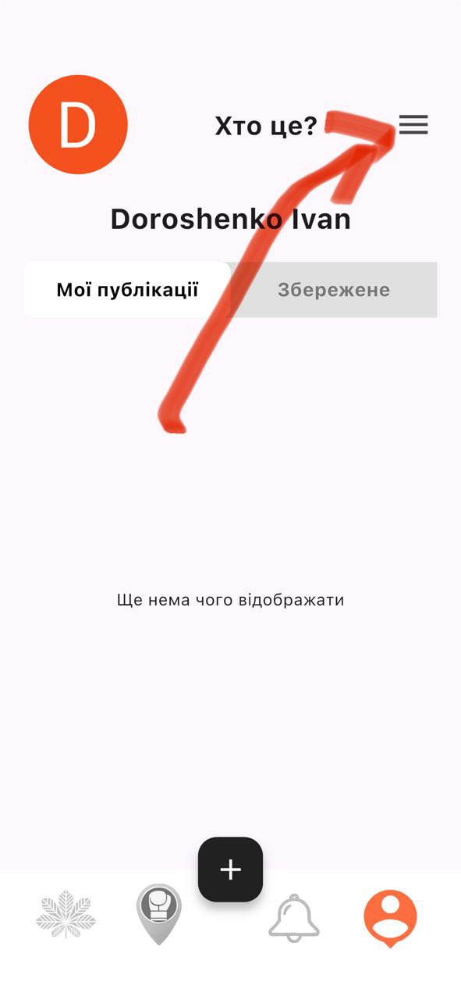
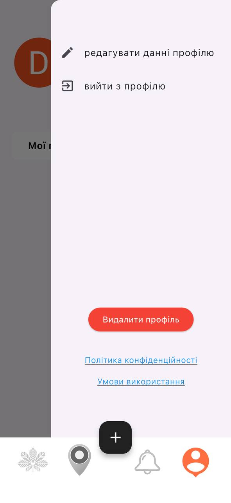
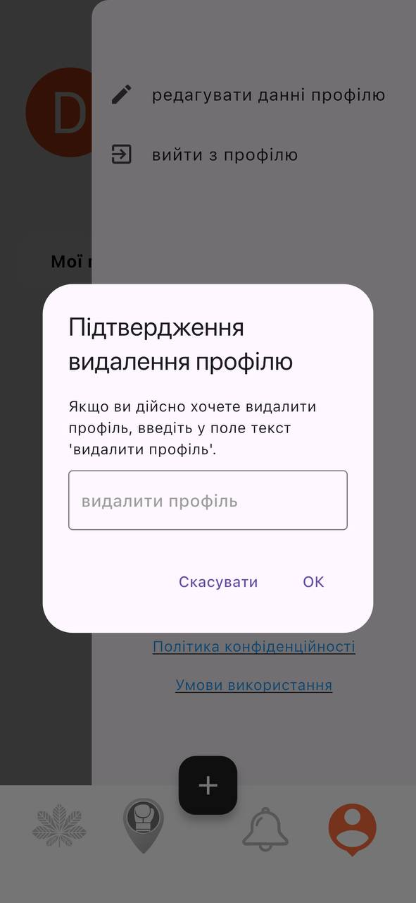
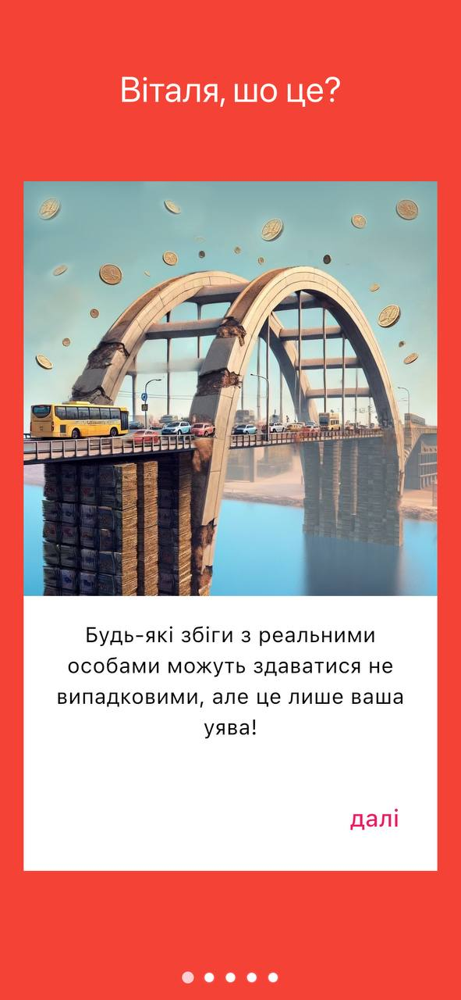

Натисніть на іконку профілю у нижньому правому куті екрану.
Натисніть на іконку "бургер-меню" у верхньому правому куті екрану.
У відкритому меню натисніть кнопку "Видалити профіль".
У вікні підтвердження введіть "видалити профіль" та натисніть "ОК".
Після натискання "ОК" профіль буде видалено, і додаток повернеться до початкового екрану.
